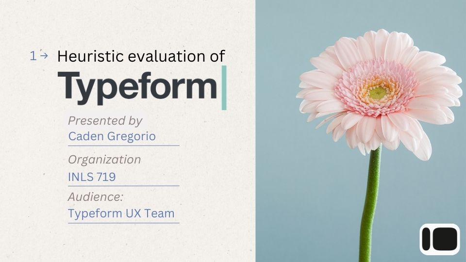
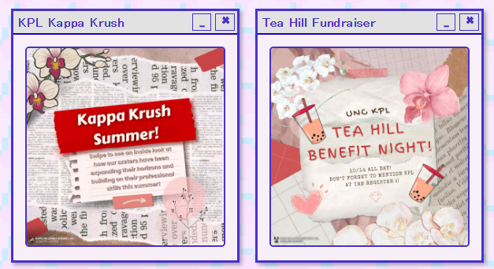

A collection of my design projects and research initiatives

Duke Fuqua Library Usability Study & Redesign
A complete overhaul of the business library's digital resources based on extensive user testing with MBA students.
View Case Study
VA11-Hall-A Bartending Point of Sale System Design
A cyberpunk themed point of sale system designed for the world of the game "Va11-HALL-A," tailored for bar use over restauraunt use.
View Design Process
JuryX Attorney Dashboard
Designed a litigation analytics platform helping attorneys predict juror behavior during voir dire.
See Details
SILS Resource Overhaul
Restructured 50+ academic resources into a findable system with clear pathways for students and faculty.
View Project
Typeform Usability Test
Conducted comprehensive testing of Typeform's survey builder with 12 participants across experience levels.
Read Report
School Org Graphic Design Works
Visual identity and marketing materials for campus organizations including posters, social media, and merch.
View Gallery